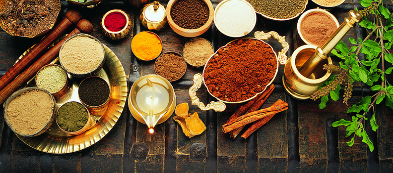

Ayuverda - Sobre a Clínica
Trabalhamos com Medicina de Família, clínica geral e reumatologia,
mas também utilizamos as seguintes especialidades da medicina oriental
e alternativa:
Ayurveda, Acupuntura, Dieta equilibrada, Fitoterapia, Massoterapia, Auriculoterapia, Terapia com pedras quentes, Drenagem linfática, Abhyanga (oleação através da massoterapia), shirodhara (oleação da cabeça), swedana (sudação), tarpana (terapia dos olhos), Nasya (terapia nasal), Rasayana (terapia de rejuvenescimento) e Vajikarana (terapia dos afrodisíacos).
Todo o nosso trabalho se inicia com o diagnóstico do desequilíbrio psico-físico, esta leitura é fundamental para a indicação da terapêutica adequada e individualizada.
Ayurveda, Acupuntura, Dieta equilibrada, Fitoterapia, Massoterapia, Auriculoterapia, Terapia com pedras quentes, Drenagem linfática, Abhyanga (oleação através da massoterapia), shirodhara (oleação da cabeça), swedana (sudação), tarpana (terapia dos olhos), Nasya (terapia nasal), Rasayana (terapia de rejuvenescimento) e Vajikarana (terapia dos afrodisíacos).
Todo o nosso trabalho se inicia com o diagnóstico do desequilíbrio psico-físico, esta leitura é fundamental para a indicação da terapêutica adequada e individualizada.